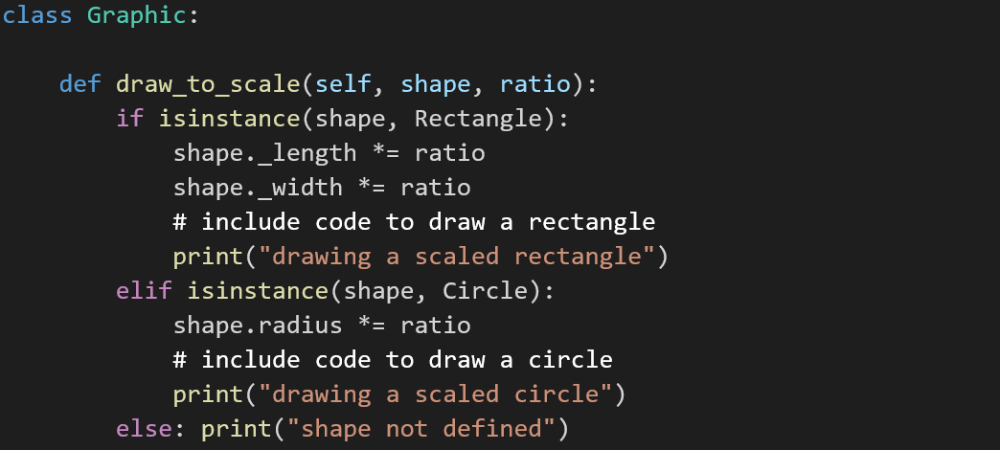

Quiz 02
Contents
Disclaimer: These are my answers, not official answers. Also multiple choice questions suck.
Question One
In the iteration planning of XP planning, which statement below is true?
a) The iteration size is chosen by the developer, rather than customer.
b) Customer can still change the stories in the iteration once it has begun.
c) The iteration ends on the specified date, even if all the stories aren’t done.
d) Customers prioritise user stories in the first iteration, regardless of the velocity.
Question Two
High Quality is enforced in XP projects through use of:
a) pair-programming and test-driven development
b) simple design and refactoring of code
c) preventing change of requirements at the end of iteration
d) all of the above
e) a and b
Question Three
A conversation between two developers:
1: I am really worried
2: What happened?
3: Whenever I fix a bug in the system, some other functionality breaks which I have not touched at all
The above scenario illustrates what kind of design smell in the system software?
a) Immobility
b) Opacity
c) Fragility
d) Software viscosity
e) Rigidity
Question Four

Choose the incorrect statement
a) The class Graphic does not conform to OCP as the method draw_to_scale() must be changed each time a new type of shape is introduced
b) The class Graphic should be decoupled from the responsibilities of calculating the scale and drawing the shape and delegate these responsibilities to the respective shape classes
c) The use of isInstance() method in the above example, does not lead to any code smells
d) The class Graphic and the various shape classes are tightly coupled as Graphic accesses all the attributes of the shape classes directly
Question Five
Which of the following is true about software design?
a) Coupling is defined as the the degree to which all elements of a component or class work together as a functional unit
b) Good software design aims for building a system with high coupling, low cohesiveness
c) Low coupling leads to eventual software rot
d) High cohesive classes are easier to maintain
e) Low coupling occurs when one module A depends on the internal workings of another module B and is affected by internal changes to module B
Question Six
Which of the following statement(s) are not true about the XP Planning Game?
a) During iteration planning, customers choose user stories for the iteration from the release plan but must fit the current project velocity
b) During task planning, user stories are broken down into programming tasks and order of implementation of user stories within the iteration is determined
c) Initial exploration involves conversations between customer and developer team to identify epic stories, breaking down epics into user-stories and user-stories are estimated
d) During release planning, customers and developers negotiate a release date (6 or 12 or 24 months in the future) and customers specify which user stories are needed and the order for the planned date (business decisions)
e) During task-planning, developers are always assigned specific tasks and are not free to choose any kind of task
Question Seven
Which of the following statements is not true in relation to refactoring software?
a) Refactoring helps to improve the structure of the code without affecting its behaviour
b) Refactoring helps to improve the structure of the code but can possibly affect the behaviour of the application
c) Refactoring introduces reusable code elements
d) Refactoring improves code understanding
e) Refactoring makes maintenance easier
Question Eight
Which one of these is a code smell?
a) Code built in a way that a change in one part of code requires the change to be implemented at the other places as well.
b) The existence of too many conditions and loops that have the potential to be broken down and simplified
c) Use of a break statement to terminate the current loop
d) Presence of identical code
e) a, b and d
f) a, b, c and d
Question Nine
All being equal, which is more desirable?
a) Higher cohesion and higher coupling
b) Higher cohesion and lower coupling
c) Lower cohesion and lower coupling
d) Lower cohesion and higher coupling
Question Ten
Which of the following statements is not true about test-driven development?
a) TDD helps to guarantee that all of the business rules have valid tests written for them even before the code is written
b) Having solid unit tests allows the developers to refactor without fear. That is, they can much more easily maintain and extend the application.
c) TDD helps us to define the problem before solving it – defining the problem in terms of a test before solving the problem, is very helpful in gaining insight into the problem
d) TDD is not recommended for agile software development methodologies as it slows down the number of user-stories that can be implemented in an iteration
e) TDD prevents scope creep – i.e. temptation of developers to include features that are not currently required, because they seem easy when doing the development